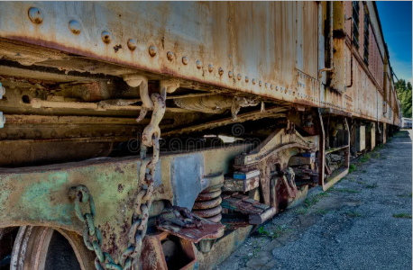

Metal Asset Protection in Coastal Sri Lanka
Sri Lanka Needs a durable Anti Corrosion Platform to disseminate data and Information and Knowledge in the Ship Building/ Structural Buildings/ sectors of Power Energy Transportation and Bridge and Highways and Water Management in Irrigation and Community Drinking water Telecommunications as most Raw material used is Mild steel / Structural Carbon Steel or Hot Dip Galvanized steels and that get destroyed due to LACK OF KNOWLEDGE on Pre treatment and Treatment against Corrosion.
.png)
We Sri Lanka as a Developing Country in South Asia has Free Education Free Health Services etc to support the Sri Lankan Community as most of us Lack below.
Developing countries like Sri Lanka face multiple challenges in corrosion education and awareness.
. Lack of application ability and capability in Understanding Implementation in Protecting the INFRASTRUCTURE
. Lack of practical Understanding of Metallic deterioration and corrosion
. Lack of Interest to explore the Hidden Knowledge
. Weak integration of engineering curriculum
. Lack of National and Personal Interest of the Enforcement “University-base” agencies and Vocational Technical Agencies to educate Our Youth
. Lack of appropriate Knowledge to understand the GAP in Information and failure to analyze the Loss factors
. Lack of Interest to upgrade the Knowledge with regard to Complacency in focusing of world research trends
. Lack of engagement to Grab the World Class Knowledge in Corrosion control
. lack of Curriculum in not only College based education on OL and AL but also non availability of Structural technical data even at University Level, as it is believed that the Officials have failed to understand the issues and these subjects are not included for the students to follow with easy access to Data and Knowledge
.png)
Knowledge Gaps in Corrosion Engineering
The main reason being our Engineering and Science Undergraduates face Financial Constraints and lack of Funds to pay for the World base knowledge this can always lead to Technical Bankruptcy and High Loss of assets and the purpose of this platform is to make available the High Cost Data as a Free for all educational Platform enabling the Interested (Researchers) and knowledge Hungry Non engineers to reach their Knowledge Goals
Seriously and to address a dire Need It is found that This Lack of such Corrosion Control Platform to obtain "Free of Cost Knowledge" can lead to breach of Human Rights too and thus it is with pleasure that suh important Knowledge is made available to our Sri Lankans who lack Financial means to upgrade their Knowledge via FREE EDUCATION WEB and it this the PRIME SACRED GOAL without expecting any Financial Gains
The Data knowledge and standards depicted here is almost 30 years old and new Technology has not been illustrated and to support the Governments to be proactive and Better way forward
The only objective is to get the engineering & industrial community adapted to use these standards and to mitigate any losses and it has no intention to infringe any Protected Interests.